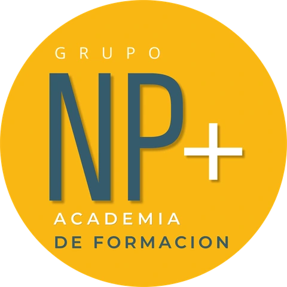
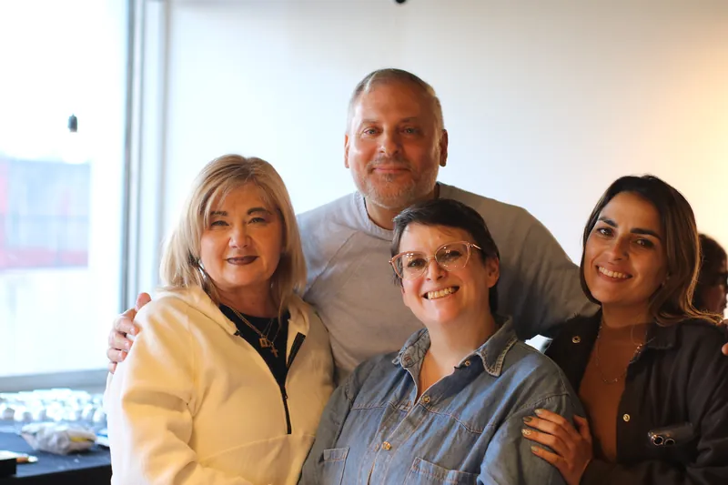
Academia
Formate como coach con la Certificación en Liderazgo Ontológico Organizacional. 100% virtual.
Quiero formarme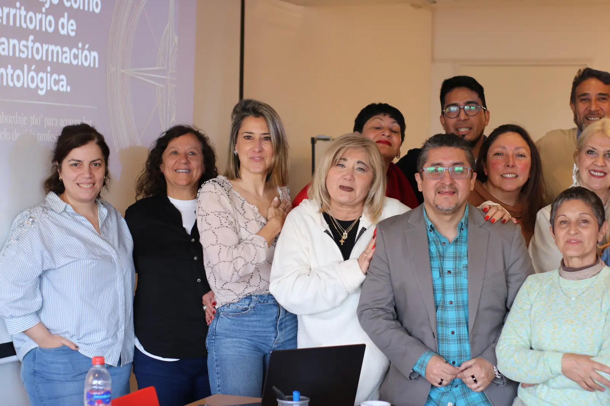
Academia, networking, empresas y mesas de desarrollo en un mismo lugar. Empezá por el espacio que necesitás.
La Academia forma y las Empresas dan práctica real. De ahí nacen los demás espacios, para que nunca estés solo en el camino.


Formate como coach con la Certificación en Liderazgo Ontológico Organizacional. 100% virtual.
Quiero formarme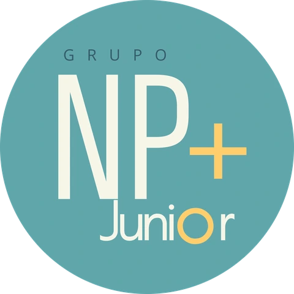
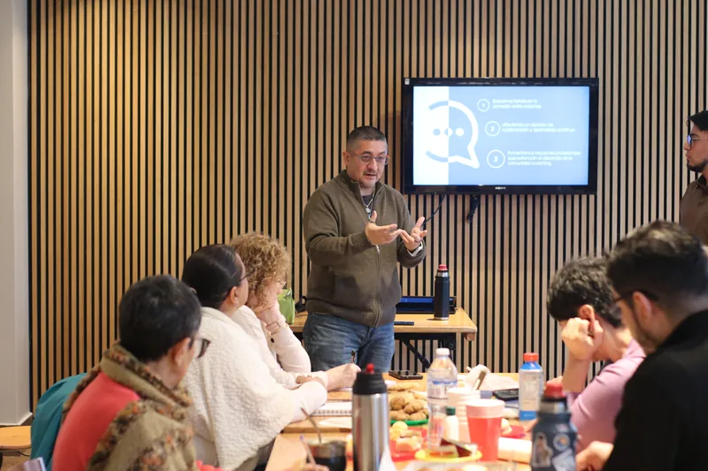
El espacio para estudiantes. Aprendé, preguntá y practicá con otros estudiantes. No importa dónde estudies.
Sumarme al Junior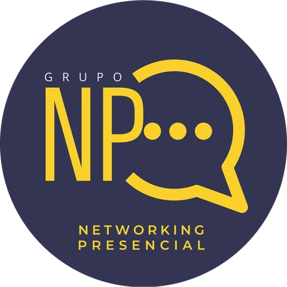
Encuentros entre coaches de distintas profesiones. Compartí experiencia y hacé crecer tu red.
Quiero sumarme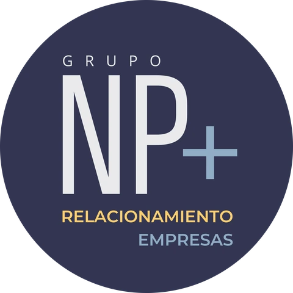
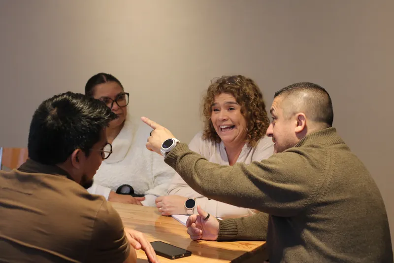
Practicá dentro de una empresa como observador. El punto más alto del recorrido: ejercer como coach adentro de una organización.
Quiero practicar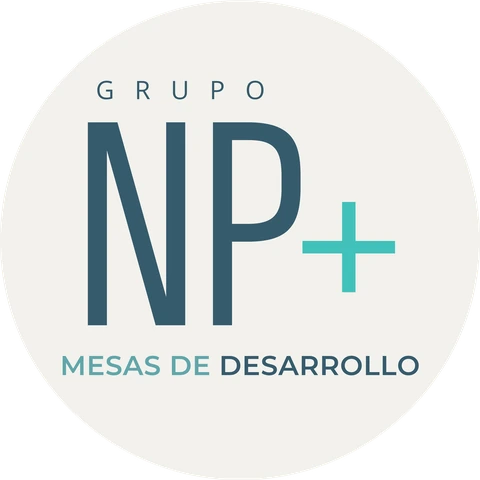
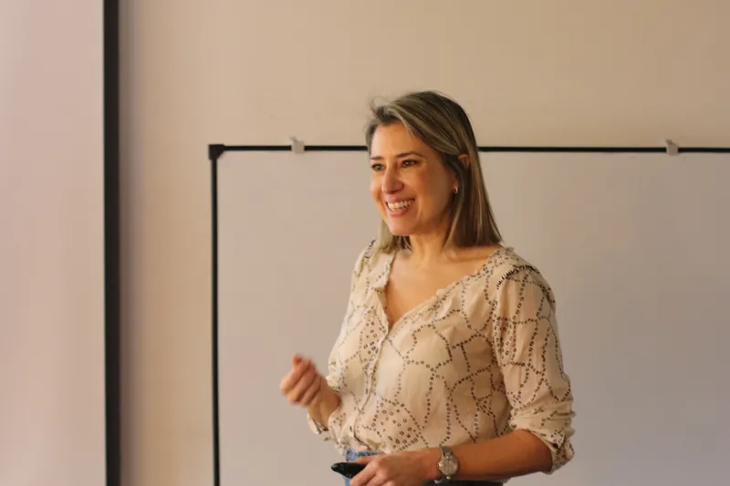
Dejá de ser observador y sé protagonista: creá tu propia mesa en tu ciudad, con el sello de NP+.
Quiero crear mi mesaY ahí empiezan las preguntas que nadie te responde.
En NP+ el sostén no espera al título. Arranca el primer día.
No es solo una certificación. Aprendés a acompañar a líderes y equipos, con toda la red sosteniéndote desde el primer día.
Sesiones de coaching individuales y grupales dentro de una organización.
Ver qué hay detrás de un conflicto y cambiar la conversación.
Hacer crecer tu contacto profesional.
Sumate a NP+ desde cualquier país. Una red de coaches que se encuentra, se recomienda y crece junta.
NP+ es una red de grupos que se encuentran, se recomiendan y trabajan juntos.
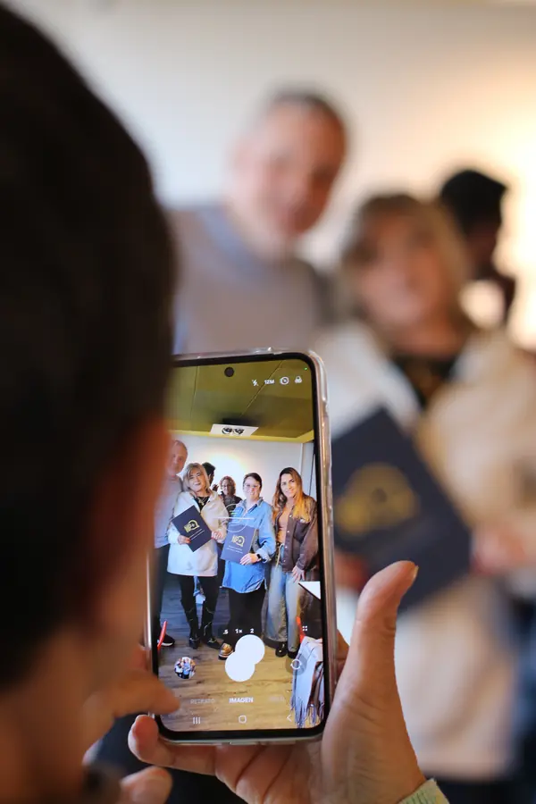
Socio fundador
Coach Ejecutivo y Organizacional
Consultor de Empresas
Coach Profesional Acreditado (CPA) por la CIC
Con más de 20 años acompañando a ejecutivos y líderes, se especializa en liderazgo, comunicación, ventas y experiencia del cliente. Integra coaching, mentoría, formación y consultoría para fortalecer equipos, alinear objetivos y transformar el talento individual en resultados compartidos.
Es cofundador de Grupo NP+, Grupo PARH Broker de Seguros, EmprendePyme, ADN Inmobiliario y SETUP, consultora de coaching y estrategia empresarial para LATAM. Creó el programa Asesor Profesional en Ventas y Experiencia del Cliente. Además, es Embajador para Argentina en la Red Global de Mentores (RGM) y Director de Relacionamiento en la Confederación Interamericana de Coaching (CIC).
Socio fundador
Coach Ontológico Profesional & PNL
Líder Industrial
Acreditado por la CIC
Cuenta con más de una década de experiencia en gestión operativa, liderazgo industrial y desarrollo de equipos. Actualmente lidera operaciones de Almacén y Expedición en una industria frigorífica de exportación, acompañando a supervisores y equipos en comunicación, gestión de personas y toma de decisiones en entornos de alta exigencia.
Es creador de la certificación De Operador a Líder que Diseña y cofundador de la Academia de Coaching y Liderazgo Organizacional. Conecta el coaching con los desafíos cotidianos del trabajo para impulsar liderazgo, autonomía y equipos que funcionen mejor.
Avalados por la ICF
Escribinos y te contamos todo. Te responde una persona del equipo, no un bot.
Inscripciones abiertas
La inversión y las formas de pago te las pasamos por mensaje directo, junto con el programa completo.
NP+ es un ecosistema de coaches con cinco espacios: la Academia, el Networking de profesionales, el Networking Junior para estudiantes, las Empresas donde practicar y las Mesas de desarrollo en otras provincias. Podés empezar por el que quieras.
Sí. El Networking de profesionales está pensado para coaches que ya ejercen. Escribinos y te contamos cómo sumarte.
No, y desconfiá de quien lo prometa. Lo que sí te damos es práctica en empresas, mentorías y una red de contactos desde el primer día. La contratación la decide cada empresa.
Sí. La academia es 100% virtual, con clases en vivo por Zoom y material online. El networking de profesionales es presencial en Buenos Aires.
Seguís en la red. Pasás al networking de profesionales y podés crear tu propia mesa de desarrollo en tu ciudad, con el sello de NP+.
Sí. El Networking Junior está abierto a estudiantes de cualquier academia de coaching, con una membresía. No importa dónde estudies.
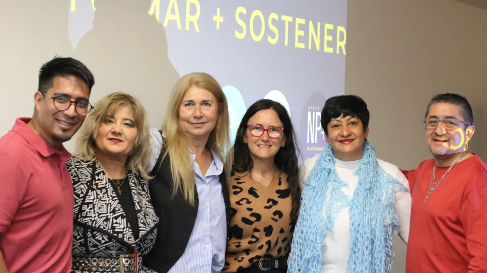
Formar más Sostener
Acá el protagonista sos vos. Escribinos y te contamos todo en una charla corta.